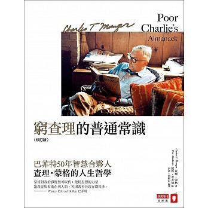

「蒙格對我的影響無可取代；他用思想的力量，讓我從猩猩進化到人類，否則我會比現在窮很多。」— 巴菲特
「只要做好準備，在人生中抓住幾個機會，迅速採取適當的行動，去做簡單而合乎邏輯的事，這輩子就能得到很大的財富。但這種機會很少，通常屬於不斷尋找和等待、充滿求知慾望，而又熱中分析各種不同變數的人。一但機會來臨，如果勝算很高，那麼利用過去的謹慎和耐心得來的資源，重重押注下去就對了。」 — 查理・蒙格
「要得到你想要的東西，最可靠的方法，是讓自己配得上擁有它。」 — 查理・蒙格
查理・蒙格，一位現代的智者。
和巴菲特相比，其為人低調，卻富含普世智慧。
與巴菲特共同打造了前無古人後無來者的現代經濟奇蹟，波克夏·海瑟威股份有限公司，在 1965 ~ 2014 年間的年均報酬率達到 19.4%，淨值增加 7,511倍。
「在手裡拿著鐵鎚的人中，世界就像一根釘子。」
在腦子裡形成一個由各種思維模式構成的框架，然後將實際經驗和透過閱讀等得來的間接經驗，懸掛在這個強大的思維模式框架上
使用這種方法可以將各種知識融會貫通，加深對現實的認知。
理解並學習不同學科的思維模型，讓這些模型串連起來，觸發魯拉帕路薩效應（Lollapalooza Effect 各種因素間相互強化、並將彼此極大化的現象）。
在現實生活中，幾乎每個系統都是受到許多因素的影響，在這樣的背景下，要理解這些系統，就必須要利用多元思維方式來解決不同因素之間的相互關係以及產生的效應。
若只依靠少數幾個思維模型會常常受限於思維界線。
當我們擁有更多思維模型，就可以將自己訓練的更加客觀，而不會被主觀的意識型態影響，在考慮許多事物時就能超越那些比我們聰明很多的人。
其中不乏幾種可靠又推薦的思維模型
數學、會計學、硬科學/工程學、統計學、心理學、雙軌分析
及微觀經濟學中的規模優勢、社會認同、官僚弊端、競爭策略、競爭性毀滅
「不必非常出色，只要在很長、很長的時間內，保持比其他人聰明一點點就夠了。」 — 查理・蒙格
「不用試圖成為聰明人，而是持續試圖別成為蠢貨。」 — 查理・蒙格
「我只想知道我將來會死在什麼地方，這樣我就可以永遠不去那裡。」
蒙格在思考時，往往不是思考該如何做到最好，而是先注意應該避免什麼，先弄清楚應該「別做什麼事」，然後才考慮接下來要「採取的行動」。
列出該避免什麼後，接下來該做什麼、不該做什麼，就相當顯而易見了。
「如果你不夠了解自己能力圈的界線，這將是場災難。」 — 查理・蒙格
「跨出舒適圈」，是一個已經被談及數次的概念。
超越現在的自己，成為自己想成為的那種人。
而蒙格在書中提及的能力圈，則是不一樣的概念，指的是你已專精的專業領域。
在踏出舒適圈，建立新的思維模型時，也要同時複習、精進自己原本的能力圈。
在能力圈內追求深度，不斷地探求更深的專業知識，不要在擴展不同能力時疏忽已有的專業。
蒙格只瀏覽過三本心理學教材，沒有深入研讀過學院派心理學，但對心理學的理解異於常人。
書中列出幾種經常誤導人的心理傾向，詳細討論各個傾向引發的錯誤，及如何避免犯錯。
《窮查理的普通常識》相當艱深，蒙格靠著自己的人生經驗、處事態度歸納出屬於他的普世智慧，背後並沒有理論的支持，相較於學術派的文章，本書更貼近一種「感覺」，蒙格靠著自己的多元思維模型建立出屬於自己的思維框架，以此審視自己的決定。
資訊大爆炸時代來臨，資訊的取得管道已不成問題，隨著資訊越來越容易取得，建立多領域的思維模式與技能顯得越來越重要。
學習如何學習，利用獲得的新技能、思維模型，重新審視自己過往的理解，客觀地理解各種新事物，避免因為意識形態而產生的思考偏差。